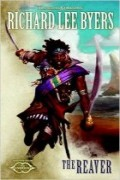

The Reaver
Écrit par Richard Lee Byers, publié en Février 2014.
AVERTISSEMENT
Cette page révèle certaines informations qui pourraient gâcher la lecture du roman. Si vous pensez lire ce livre dans un futur proche, mieux vaut ne pas parcourir ce résumé !
1486. C'est l'époque de la Grande Pluie, des précipitations incessantes qui vont jusqu'à faire monter le niveau de la mer des Étoiles Déchues et font croire à beaucoup que le temps d'Umberlie, la déesse maléfique des océans, est venu. Anton Marivaldi, natif du Turmish et capitaine du bateau pirate Iron Jest, cherche, dans un village entre Teziir et Westgate, Stedd, un jeune garçon prophète Élu de Lathandre, dieu que l'on disait disparu, pour le compte d'un certain Highcastle. Anton parvient à capturer sa proie mais, suite à un différent avec son équipage, il prend finalement la fuite avec le garçon. Stedd lui révèle qu'il est sortit d'un "camp" et lui demande de l'emmener à Sapra. Le pirate lui dit qu'il accepte, alors qu'en réalité il n'abandonne pas l'idée de ramener le garçon pour toucher sa prime et, à Westgate, grâce à ses contacts avec le milieu local, il affrète d'ailleurs un bateau pour les Îles Pirates. Mais Stedd découvre le subterfuge et s'échappe, pour être capturé ensuite par l'Église d'Amaunator qui veut s'en servir de monnaie d'échange avec l'Église d'Umberlie.
Pendant ce temps à Immurk's Hold, dans les Îles Pirates, une Magicienne rouge du Thay du nom d'Umara Ankhlab rend justement visite au capitaine Evendur Highcastle, un mort-vivant lui-même Élu d'Umberlie. Sous prétexte de venir négocier une alliance entre celui-ci et Szass Tam, la liche qui dirige le Thay, nation dont le patron est le dieu Baine, le vrai but de la visite est de vérifier s'il est bien un Élu. L'accord serait simplement que les pirates des îles n'attaquent pas les bateaux de commerces du Thay et se concentrent sur ceux d'Aglarond en échange d'une contre-prestation économique. La magicienne ajoute que la Sembie est sur le point de gagner sa guerre contre le Cormyr et que le pirate va rapidement avoir besoin d'alliés pour contrer ce puissant royaume. Mais, très imbu de sa personne, Highcastle refuse la proposition. Avant de repartir, l'espionne a toutefois le temps de découvrir que son hôte recherche un jeune Élu, lequel devient alors la nouvelle cible du supérieur d'Umara, un vampire du Thay qui répond au nom de Kymas et qui a pour tache de trouver des Élus à sacrifier pour le compte de Szass.
Retrouvant la piste du garçon, Anton et ses contacts de la bande des Couteaux de Feu, dirigée par le halfelin Dalabrac, entreprennent de nuit une mission au sein du temple d'Amaunator de Westgate pour récupérer Stedd. Or au même moment Umara fait de même. Les deux camps s'unissent face aux gardiens du temple pour exfiltrer l'Élu mais, voulant doubler le Magicien rouge, les trois membres de la pègre finissent morts dans une ruelle et Kymas embarque sur sa galère avec Stedd, direction le Thay, laissant derrière lui Anton et Umara. Ces derniers se lancent alors à la poursuite du vampire avec le petit bateau du gnome Falrinn que le pirate avait fait préparer.
À Immurk, la déesse Umberlie, qui enrage de voir qu'on ne va pas lui offrir en sacrifice l'Élu et ainsi discréditer la renaissance de Lathandre, ordonne à Evendur de se charger en personne de lui ramener le garçon. Et c'est à bord du Iron Jest que le mort-vivant attaque la galère du Thay. Au même moment Anton et Umara se joignent à la bataille et, grâce à l'aide de Stedd, parviennent à se débarrasser de Highcastle alors que l'ancienne caravelle du pirate coule. Mais Anton, qui pensait pouvoir négocier plus facilement sa récompense avec Kymas qu'avec l'Église d'Umberlie, finit prisonnier du vampire qui reprend sa route vers le Thay. La magicienne, comme le pirate, se prend alors de "sympathie" pour l'enfant. Elle délivre les deux captifs et part en finir une fois pour toute avec son supérieur, ce qu'elle parviendra à faire au terme d'un combat épique au cours duquel Anton viendra lui prêter main forte. Toutefois le bateau est avarié suite à la bataille navale, et le voyage vers Sapra devra continuer par la terre ferme.
Traversant la forêt de Gulthmere, le groupe est attaqué par de nombreux lions, puis par un gigantesque, qui s'avère être le seigneur lion Nobanion, un demi-dieu qui est depuis la Magepeste sous l'emprise de Malar, le dieu de la chasse et des lycanthropes. Les trois héros parviennent à délivrer la bête de son enchantement, et d'ennemi le lion devient un de leur plus précieux alliés. Ils passent alors à Morningstar Hollows, s'emparent d'un bateau pirate qui était à leur poursuite, et arrivent enfin à Sapra, la ville natale d'Anton. De là ils se rendent à la maison de Sylvanus, le siège forestier des druides de l'Enclave d'émeraude, à moins d'une journée de marche. Ils y rencontrent les trois druides leaders de cette organisation déclinante, trois Élus de Sylvanus : le demi-elfe Ashenford Torinblow, l'humaine Cabal Shinthala et la principale, l'elfe Cindermoon, qui depuis la Magepeste devient chaque jour un peu plus folle. Après avoir ramené cette dernière à la raison, les druides et Stedd réalisent un rituel pour ramener l'ordre naturel au Turmish et mettre un terme à la famine de la région. La mer des Étoiles Déchues reprend sa place, l'île disparue d'Ilighôn renaît et la cité d'Alaghôn redevient un port.
Mais les druides sont avertis que Highcastle, qui n'est finalement pas mort, projette d'attaquer la cité de Sapra avec tous les bateaux des Îles Pirates et ceux des ports dévoués à Umberlie, comme Westgate. Anton et Umara, sans le jeune Élu cette fois, se précipitent alors vers cette cité et récupèrent le bateau du Thay que des voleurs leur avaient soustrait, ainsi que son équipage. Et une grande bataille navale s'engage entre la flotte de Highcastle et celle du Turmish. La druide Shinthala se joindra au combat. Anton et Umara ne sont bien évidement pas en reste, et s'attaquent frontalement à Evendur. À l'Enclave d'émeraude, Lathandre se présente face à Stedd et lui donne sa masse d'or Dawnbringer puis, aidé par la magie des druides, le jeune garçon rejoint lui aussi le combat. Là, il a juste le temps de bénir les armes d'Anton afin que celui-ci puisse en finir définitivement avec le mort-vivant. Leur chef disparu, les pirates se retirent ou se rendent. Quelques temps plus tard, la Grande Pluie cesse...